حـكـايـة العـز والـبـقـاء
يا مراحب بيك في ديوان الكرم، في ضيافة رجالة وأحفاد الحاج زرازير أبوبكر الزوكي.
حكاية سطرها الجدود بالدم والعرق، وورثوها للأحفاد عزة وكرامة في ربوع التل الزوكي، تاريخ يشرف أي حد وتتوارثه الأجيال جيل ورا جيل.
القرية وشواهد العز القديم
في أقصى شمال شرق بلاد الهلة، تتربع قريتنا "التل الزوكي" زي القلعة الحصينة. مبنية على المرجلة والكرم، حيطانها شايلة شرف رجالها، ودروبها بتشهد على حكايات العز اللي ما تتنسيش.
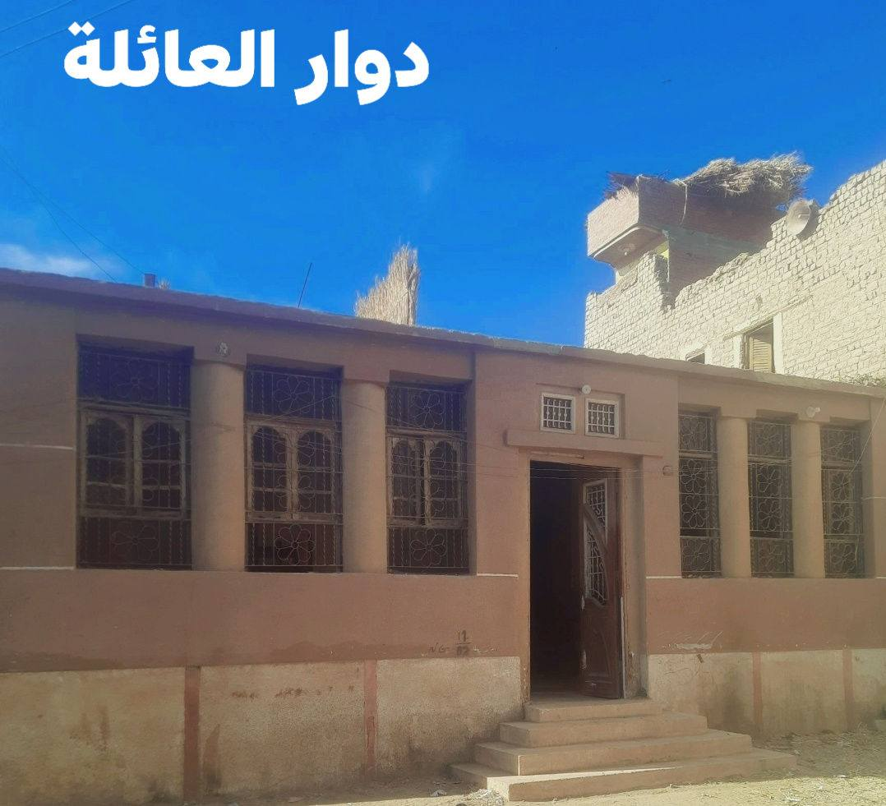
مضيفة العز ودوار الكرم
الدوار ده يا ولدي مش حيطان مبنية وخلاص، ده حضن بيلم العيلة، ومضيفة مفتوحة للغريب قبل القريب. دوار عيلة زرازير هو القلب النابض للبلد، بيبانه ما بتتقفلش في وش ضيف. جواه قعد كبارات البلد يحلوا ويربطوا، وفيه اتربى الصغير على احترام الكبير. الدوار ده شاهد على صواني الأكل اللي بتطلع للكريم والمحتاج، ومقعد الرجالة اللي كلمتهم سيف على رقبتهم.
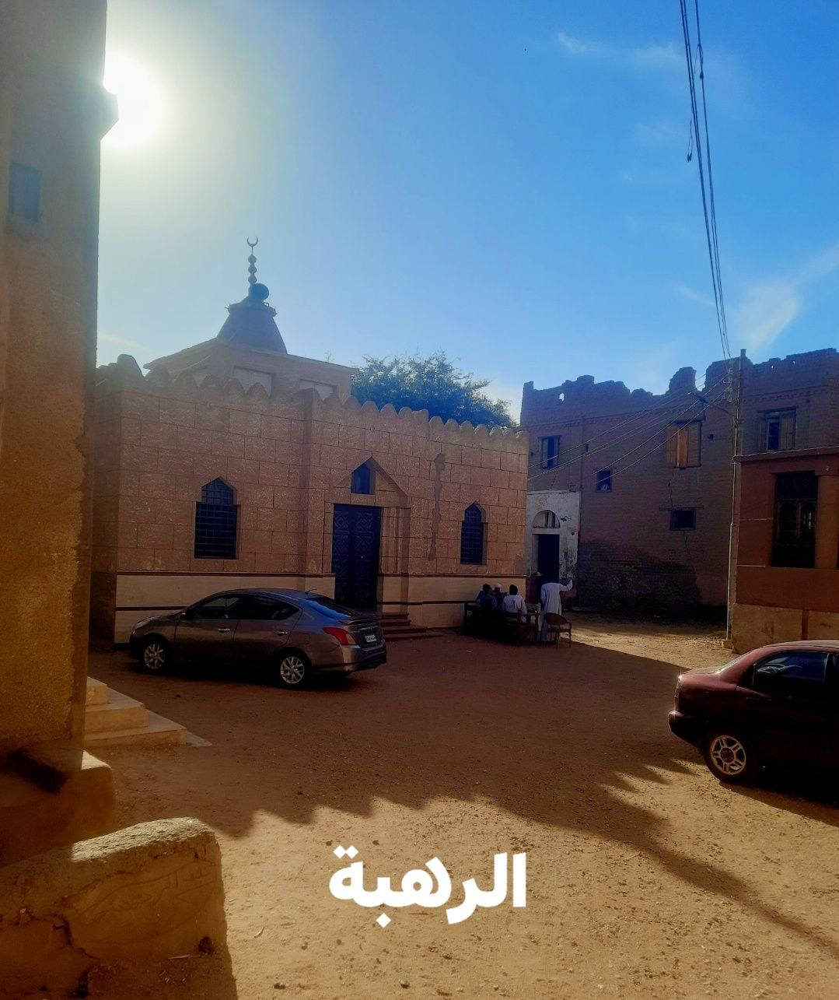
ساحة الرهبة.. مطرح البركة واللمة
ساحة الرهبة دي مطرح البركة، ريحة الجدود الطيبة فايحة فيها. "الرهبة" مش مجرد براح فاضي، دي مكان الصلح والصفا واللمة الزينة. هنا جمب الجامع، بتتوزن الكلمة بميزان الذهب، وهنا بتخلص القعدات العرفية بالتراضي والمحبة. الساحة دي شافت عهود اتقطعت على كتاب الله بين رجالة تخاف ربها وتصون حق الجار، وتفدي البلد بالروح.
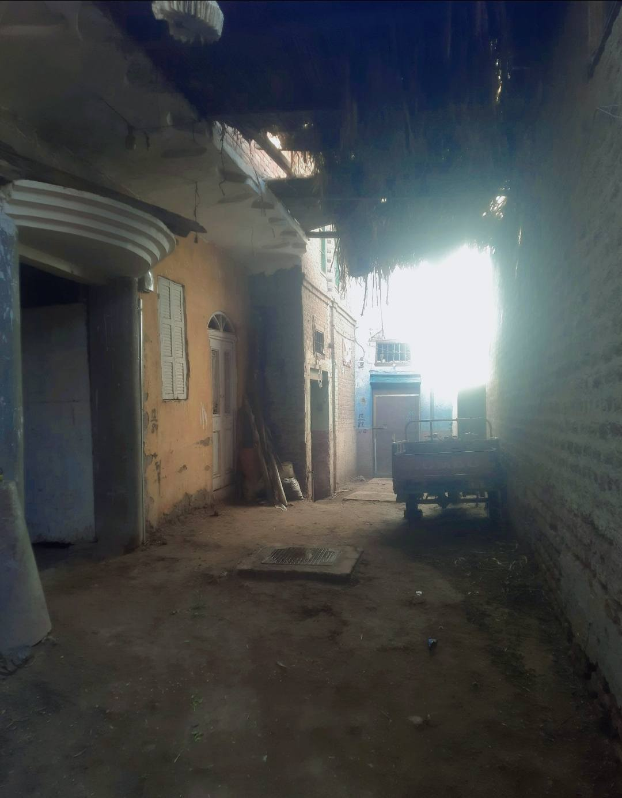
حارات وبيوت سَد منيع
بص يا ولدي للحارات دي، البلد زمان ماكانتش سايبة، دي كانت مبنية بذكاء بالفطرة عشان تحمي العِرض والأرض. بيوتها سد منيع زي القلعة، ضهر البيت لبرة عشان يحمي من الغريب، والبوابات خشب تقيل يقفل على الناس بالليل كأنهم عيلة واحدة. الرجالة زمان كانوا بيبنوا بيوتهم تحصين وحماية، كل طوبة فيها بتقول إننا هنا قاعدين ومتربعين، ولا حد يقدر يهوب ناحيتنا.
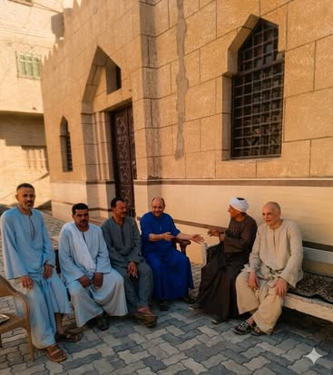
قعدة الرجالة وأحفاد الأصول
الصورة دي بتلخص الحكاية؛ دول أحفاد العيلة الكريمة، ولاد العمدة سليمان والعمدة حسانين ويوسف وحسن وإسماعيل ومحمد وعبدالمغيث، الله يرحمهم جميعاً. الرجالة دول شايلين اسم تقيل يوزن جبال، وشربوا المرجلة كابر عن كابر. قاعدين قعدة صفا قدام الرهبة، والضحكة على وشوشهم بتطمنك إن الخير لسه فينا، وإن الغصن اللي تفرع من شجرة زرازير لسه طارح عز وشهامة.
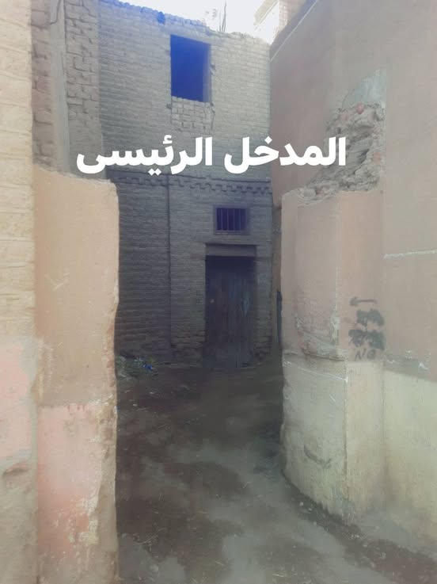
بوابة التاريخ.. المدخل الكبير اللي انهد
البوابة دي يا ولدي مش مجرد طوب مرصوص، البوابة دي ياما دخل منها كبارات البلد والضيوف اللي قاصدين العمار. ده المدخل الرئيسي للعيلة اللي كان بيحرس التاريخ. ولما جم بتوع الغاز الطبيعي عشان يدخلوا المواسير، اضطرينا نكسر المدخل ده. صح الحيطان اتهدت، بس ربك سبحانه وتعالى أراد خير؛ الهَدة دي هي اللي خلتنا نكتشف اللوحة الخشبية المدفونة وننقذ كنز الجدود اللي كان هيضيع، عشان تفضل سيرتنا عطرة وحاضرة.
اللوحة الخشبية.. شاهدة على العظمة
يا سبحان الله، بعد ما المدخل انكسر، ظهرت قدامنا يافطة خشب محفورة كأنها بتنطق؛ لوحة العمدة "سليمان الحاج زرازير" مكتوب عليها سنة ١٢٧٢ هجرية. حتة الخشبة دي شهادة ميلاد لتاريخنا، براءة ذمة من النسيان.
شوف بعينك حكاية الخشب
الفيديو ده بيوثق اللحظة اللي الرجالة طلعوا فيها اليافطة الخشب قبل ما اللوادر تدوسها. ولما نضفناها وغسلنا الخشب بمية الذهب، الحروف البارزة نطقت وقالت كلمتها:
"سنه ١٢٧٢ .... عبد الله سليمان زرازير ...
الحمد لله وحده لا شريك له"
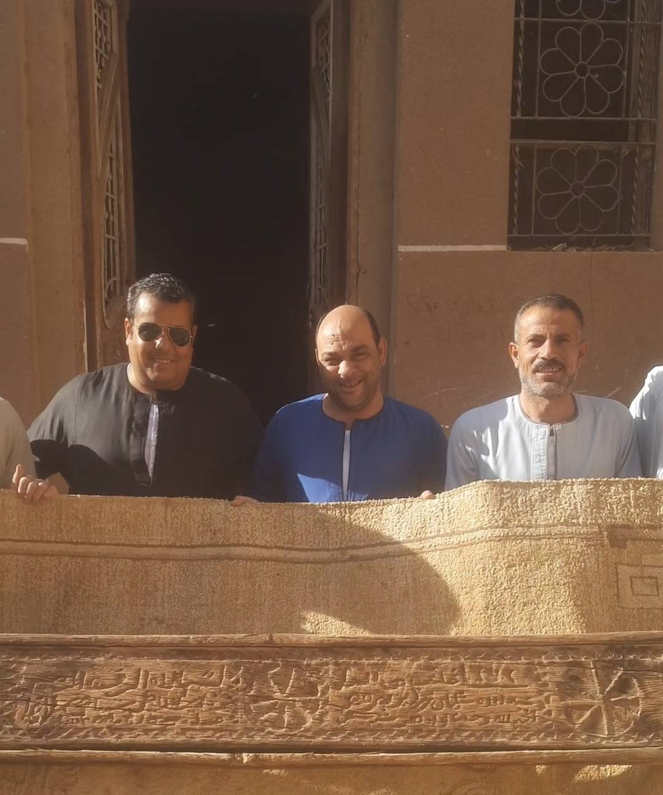
رجالة شايلة تاريخ يوزن جبال
شوف الرجالة وهم شايلين يافطة جدهم الكبيرة، شايلينها كأنهم شايلين عِرضهم وشرفهم. الفخر باين في عنيهم، لأنهم لحقوا تاريخ عيلتهم اللي بقاله أكتر من 171 سنة من الضياع. حملهم للوحة دي هو عهد ووعد إن سيرة العمدة سليمان واسم زرازير هيفضل عالي ومرفوع فوق الرؤوس، ومفيش هدة ولا زمن يقدر يمحيه.
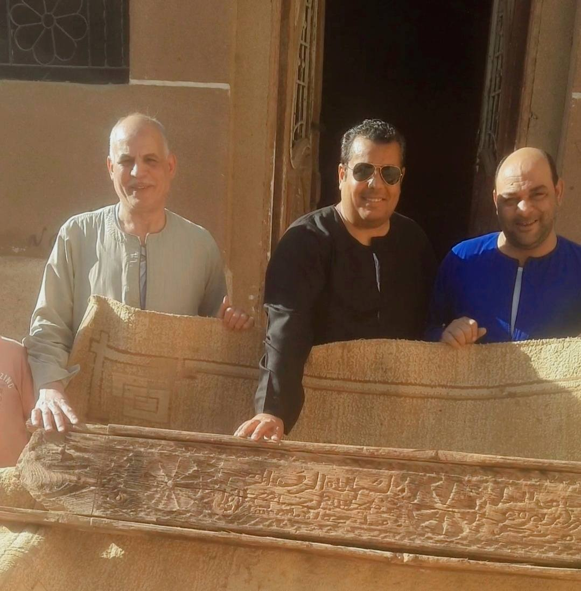
دق وحفر عاش سنين وسنين
قرب بص للحفر اللي على الخشب ده. النجار اللي دق الخشب ده من قرنين فاتوا كان عارف إنه بيكتب تاريخ. اليفط دي زمان كانت بتتحط على بوابات الكبارات، بتبقى زي الختم، بتقول للغريب إنت بتخطي عتبة مين. صلابة الخشبة دي من صلابة الرجالة اللي اتسمت باسمهم، قدرت تقاوم السنين والتراب عشان تطلع لنا النهاردة وتحكيلنا عن عز عيلة زرازير في الصعيد كله.
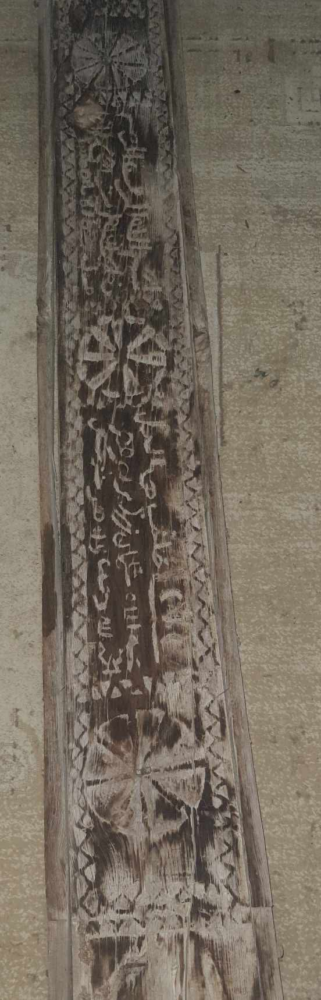
حفر الجدود اللي ما ينمحيش
بص بالطول والعرض لحتة الخشبة دي، حفر عميق بأيادي تتلف في حرير. النقوش دي مش مجرد زينة، دي حكاية عز ومجد. اللوحة دي بتشهد على أصل عيلة زرازير، كل تفصيلة فيها بتنطق وتقول إحنا هنا من زمان الزمان، جذورنا ضاربة في الأرض ومفيش ريح تقدر تهزنا. دقق في كل حرف محفور، تلاقيه بيرد الروح ويأكد إن أمجاد الماضي لسه حية وبخير.
الورق اللي نطق بالحق
ولما ربك يريد يظهر الحق، يخليه يظهر من كل ناحية! تاني يوم الزيارة، تقع تحت إيدينا دفاتر ومخطوطات وأختام قديمة، نفتحها نلاقي اسم الجدود منور فيها زي الذهب، عشان كلامنا يبقى متوثق بختم الحكومة الميري وتاريخ الكبارات.
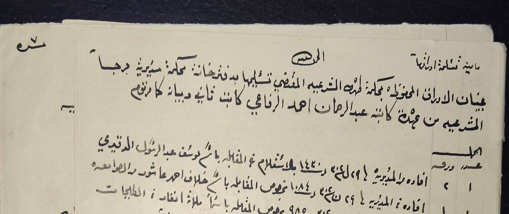
دفتر الحكومة وتاريخ الكبارات
الصورة دي لغلاف دفتر المحكمة الشرعية بتاع طهطا من أيام مديرية جرجا سنة ١٨٩٥ ميلادية. الورق ده مش أي ورق، ده دفتر الحكومة اللي كان بيوثق أملاك وحقوق العائلات التقيلة. الدفتر ده متسجل بخط الكاتب "عبدالرحمن أحمد الرفاعي"، وبيثبت للدنيا بحالها إن تاريخ زرازير مش بس محفور على الخشب، لأ ده متوثق في دفاتر الحكومة كعيلة من أعيان البلد ليها مركزها وهيبتها من أيام زمان.
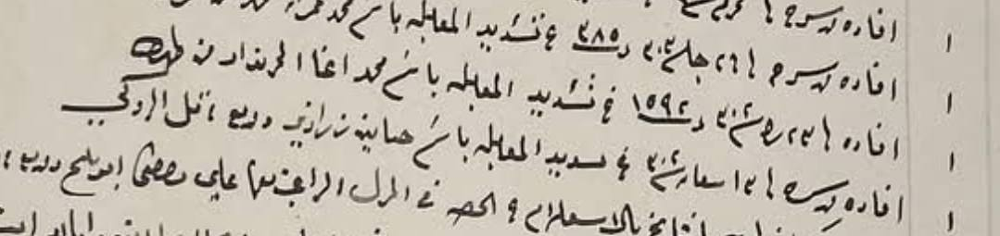
حجة حسانين زرازير.. اسم منور في الدفاتر
هنا بقى المعجزة كملت! نفتح الدفتر نلاقي قدامنا ورقة رسمية بإفادة تسديد ومكتوب فيها بالبنط العريض اسم "حسانين زرازير" من أعيان التل الزوكي. وحسانين ده يا غالي يطلع أخو العمدة سليمان اللي اسمه على لوحة الخشب، والاتنين ولاد الحاج زرازير. يعني الخشب بيكلم الورق، والورق بيبصم بالعشرة إن النسب ده طاهر وتاريخه أصل متين مافيهوش شك ولا ريب، يرفع راس أي حد ينتمي ليه.
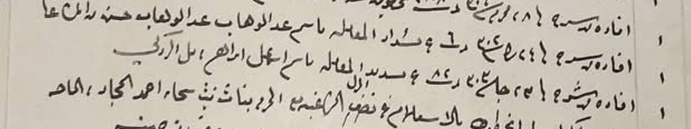
ورقة إسماعيل إبراهيم.. شهادة للتاريخ
الدفاتر الميري ما بتكدبش يا ولدي، وما بتكتفيش بدليل واحد. نقلب الصفحة نلاقي للسنة اللي بعدها (١٣٠٣ هـ) ورقة تانية بإفادة تسديد معاملة لراجل تاني من رجالة البلد اسمه "إسماعيل إبراهيم" من التل الزوكي. الورق ده بيأكد إن القرية دي كانت قرية شغالة وفيها حركة اقتصادية كبيرة وتجارة وعمار، وده كله كان تحت رعاية وحماية عائلاتها التقيلة. دي أمجاد بتتحكي وبنورثها لعيالنا وهم رافعين راسهم لسابع سما.
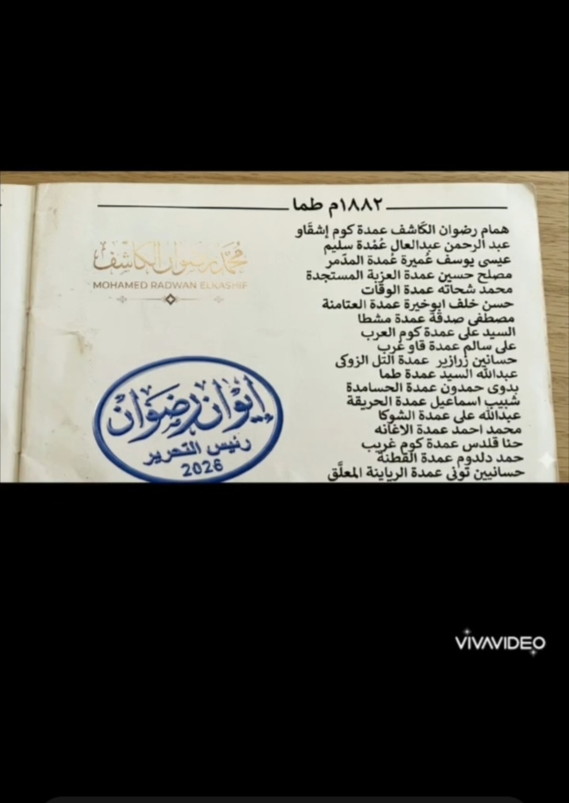
كشف العمد وكبارات طما.. اسم يجلجل
الورق بيزيد تأكيد يا ولدي! بص للكشف ده، كشف عمد طما من أيام سنة ١٨٨٢ ميلادية. اسم جدنا "حسانين زرازير" منور كعمدة لـ "التل الزوكي". دي مش حكاوي قهاوي، ده تاريخ متسجل في الكتب ومطبوع يثبت إن العيلة دي ليها الريادة والقيادة والكلمة المسموعة من أكتر من قرن ونص، كلمتهم كانت بتمشي على الكبير والصغير في البلد.
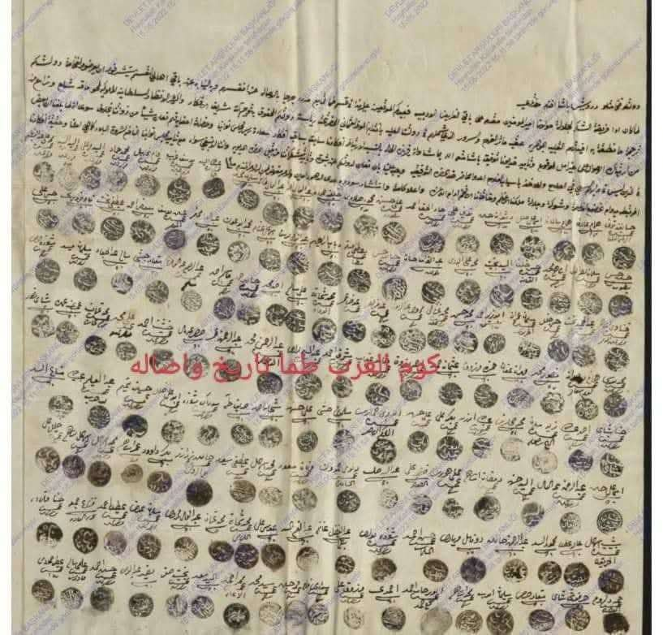
حجة وتاريخ عليه أختام الكبارات
دي بقى مش أي ورقة، دي حجة ومخطوطة قديمة مرشوشة بأختام كبارات الصعيد. الورق اللي عليه الأختام دي بيبقى مليان بأسرار وتاريخ بيوت العز، بيثبت مين كان بيحل ويربط في الزمان ده. كل ختم في المخطوطة دي بيحكي قصة راجل كلمته كانت سيف على رقبته، وتاريخ متأصل في طما وكوم العرب والتل الزوكي، تاريخ يوزن بالدهب.
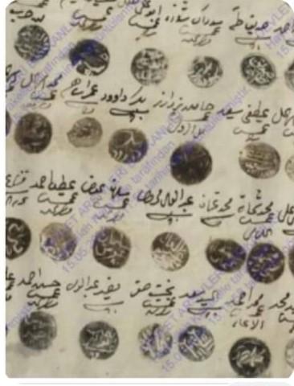
ختم الجدود.. أصل وفصل ما يتوهش
ولما تقرب وتزوم على المخطوطة دي، عينك هتقع على الختم والاسم المكتوب بمداد ما يبهتش. أختام الجدود دي كانت زي البصمة الميري اللي بتمشي على الكبير والصغير. ثبات الاسم وسط الأعيان في حتت الورق المعتقة دي بياكد بما لا يدع مجال للشك إن عيلة زرازير ليهم جذور ضاربة في الأرض، وتاريخهم كله أصالة ومرجلة ما تتنسيش مهما لفت الأيام.
"قالوها زمان يا ولدي: مش المرجلة إنك تقول أبويا كان وكان، المرجلة إنك تصون اسم أبوك وتعليه لسابع سما. وعيلة زرازير جابت رجالة تصون العهد وتشيل الراية جيلاً ورا جيل."
شـجـرة عـائـلـة زرازيـر
من ظهر الجد الكبير "زرازير" طلعت فروع وعائلات تصد عين الشمس. ضيف اسمك واسم جدودك بالترتيب لحد "زرازير"، والخوارزمية هتربطك بإخواتك وعمامك بشكل شجرة هرمي احترافي!
بنجيب المخطوطة من الدفاتر...
سؤال وجواب عن تاريخنا
تاريخ اللوحة التأسيسية اللي نجدناها من الهدم مكتوب عليها سنة ١٢٧٢ هجرية، يعني توافق تقريباً سنة ١٨٥٥ ميلادية، بحسبة بسيطة يطلع عمر اللوحة دي معدي الـ 171 سنة بحالهم، ودي فترة تكفي تعمر بلاد وتهد بلاد.
عشان الحكاوي الشفوية ممكن تتنسي أو تتغير مع الزمن، لكن الدفتر الميري ومخطوطات الأختام دي إثبات حكومي بختم النسر ما يقدرش حد يشكك فيه، بيأكد أسامي أجدادنا ونفوذهم في البلد، وبيسند قصة اللوحة الخشب ويثبت إننا عيلة ليها أصل وتاريخ من زمان الزمان.